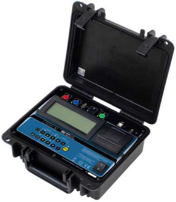

Medidor de pozo a tierra (Telurometro)
El telurómetro es un aparato que nos permite realizar la medición de un SPAT (Sistema de Puesta a Tierra) para comprobar su correcto funcionamiento siendo así el principal indicador del estado del mismo.
Las puestas a tierra dentro del sistema integral de protección eléctrica, protege a las personas, la infraestructura y los equipos contra los riesgos y peligros que existen de producirse algún fenómeno eléctrico.
Debe ser realizado por profesionales tales como Ingenieros Eléctricos o afines colegiados y habilitados en el colegio de Ingenieros del Perú. El protocolo para que tenga validez legal debe estar avalada por la firma del profesional.
Existen dos parámetros importantes a la hora de diseñar o efectuar el mantenimiento de un sistema de puesta a tierra:
La resistencia de puesta a tierra (medida en ohmios, Ω) y La resistividad del terreno (medida en ohmios metro, Ωm).
La resistividad es un parámetro fundamental en el diseño de las puestas a tierra. La resistividad es una característica intrínseca del suelo, es independiente de la morfología pero sí depende de la humedad o temperatura. Varía a lo largo del año. La presencia de agua en el suelo no implica necesariamente una resistividad baja.
Debido a que la resistividad del suelo varía notablemente por el tipo de suelo y en función de parámetros estacionales el sistema debe diseñarse para las peores condiciones posibles. Los suelos de resistividad baja suelen ser corrosivos pues son ricos en humedad y sales, el estado del mismo.
Un telurómetro es un equipo profesional para efectuar mediciones en Sistemas de Puesta a Tierra en parámetros de voltaje y resistencia, empleando el metodo wenner.
Este método consiste en medir la resistividad del suelo, para esto se insertartán 4 electrodos en el suelo. Los cuatro electrodos se colocan en línea recta y a una misma profundidad de penetración, las mediciones de resistividad dependerán de la distancia entre electrodos y de la resistividad del terreno.
Características
Utilizan corriente alterna para la prueba, pues la tierra no conduce bien la corriente continua.
Utilizan una frecuencia próxima, pero distinta, a la frecuencia de red y sus armónicos. De esta forma, se evita que las corrientes fantasmas o procedentes de otras fuentes interfieran con las medidas de impedancia de tierra.
Los medidores de cuatro hilos disponen de cables de generación y medida independientes para compensar la resistencia eléctrica de los propios cables (método de medida de resistencia a cuatro hilos). Este método permite eliminar de la medida de la impedancia de tierra el valor de la resistencia óhmica de los cables de prueba pues, en ocasiones, por tener una elevada longitud, presentan una apreciable resistencia eléctrica.
Tienen un filtro de entrada diseñado para captar su propia señal y rechazar todas las demás.